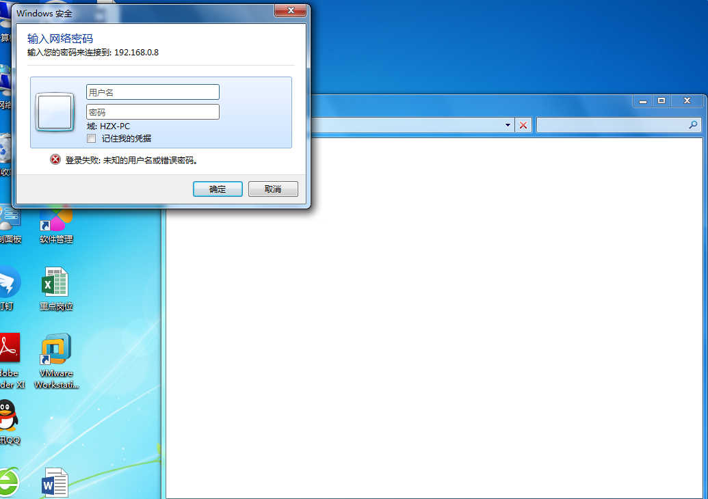

方式1：服务器网络共享打印机
开始键+R打开运行窗口，右键或者双击左键连接，自动安装驱动。（若找不到驱动，可以手动选择驱动的位置，路径在\\192.168.0.8\_标准软件安装列表2016\打印机驱动。）
特殊情况：提示找不到驱动，可以手动选择驱动的位置，从磁盘安装，路径在\\192.168.0.8\_标准软件安装列表2016\打印机驱动。
方式2：TCP/IP连接类型
以三楼集团公共打印机连接为例
注意事项：三楼公共打印机按部门分摊费用，使用时需刷工卡，需开通工卡使用权限的同事，可以联系行政服务中心孟美慧。
打印机IP地址：192.168.13.1
连接步骤如下：
非加域计算机连接打印机
如访问\\192.168.0.200服务器网络共享打印机或者\\192.168.0.8文件服务器，都会弹出域用户验证对话框窗口
账号：gosuncn\姓名全拼
密码：与外网验证密码一致


打印机驱动位置
开始键+R打开运行窗口，输入“\\192.168.0.8\_标准软件安装列表2016\打印机驱动”。
通信事业部打印机
通信事业部主要公共打印机品牌型号：东芝4540
连接方式：
①打印机IP地址：\\192.168.14.240
②直接打开驱动自动寻找打印机：驱动位置“\\192.168.0.8\_标准软件安装列表2016\打印机驱动”
温馨提醒：这台打印机需要输入部门密码才能打印，密码管理者：黄显明，协调方IT流程体系部：张磊、陆汝豪
平安事业部打印机
平安事业部公共打印机：
施乐一体打印机：\\192.168.0.200 （网络共享地址）
温馨提示：若出现安装寻找不到驱动，可以手动添加TCP/IP端口(打印机IP地址：192.168.16.200)，从硬盘安装驱动，详细步骤，参考第三项“方式2：Tcp/IP连接类型”连接方法。
平安新场地打印机：
平安新场地(FX3370)：\\192.168.0.200 （网络共享地址）
温馨提示：若出现安装寻找不到驱动，可以手动添加TCP/IP端口(打印机IP地址：192.168.37.9)，从硬盘安装驱动，详细步骤，参考第二项“方式2：Tcp/IP连接类型”连接方法。
研发中心打印机
研发内部两台部门公共打印机：
彩色打印机IP地址：\\192.168.15.27 或\\192.168.0.200
黑白打印机IP地址：\\192.168.15.38
连接方法：加域计算机可以参考第一项“方式1：服务器网络共享打印机”，开始键+R打开运行窗口输入打印机IP地址如\\192.168.15.27,右键或者双击连接打印机；非加域计算机偶尔会提示网络错误“Windows无法访问\\192.168.15.27”,这样子可以参考第二项“方式2：Tcp/IP连接类型”连接方法。
行政中心打印机
行政中心办公室104两台部门公共打印机：
彩色打印机IP地址：\\192.168.11.65 或 \\192.168.0.200
新的黑白打印机IP地址：\\192.168.11.220 或 \\192.168.0.200
制造中心打印机
制造中心办公室打印机：
打印机IP地址：\\192.168.12.3 或\\192.168.0.200
财务部打印机
财务部大台打印机：
打印机IP地址：\\192.168.0.200或\\192.168.13.249
IT流程体系部打印机
IT流程体系部打印机：
打印机IP地址：\\192.168.0.200或\\192.168.18.200
{kind=link}
{kind=link}
{kind=link}
{kind=link}
{kind=link}
{kind=link}
{kind=link}
{kind=link}
{kind=link}
{kind=link}
{kind=link}
{kind=link}
{kind=link}
{kind=link}
{kind=link}
{kind=link}
{kind=link}
{kind=link}
{kind=link}
{kind=link}
{kind=link}
{kind=link}
{kind=link}
{kind=link}
{kind=link}